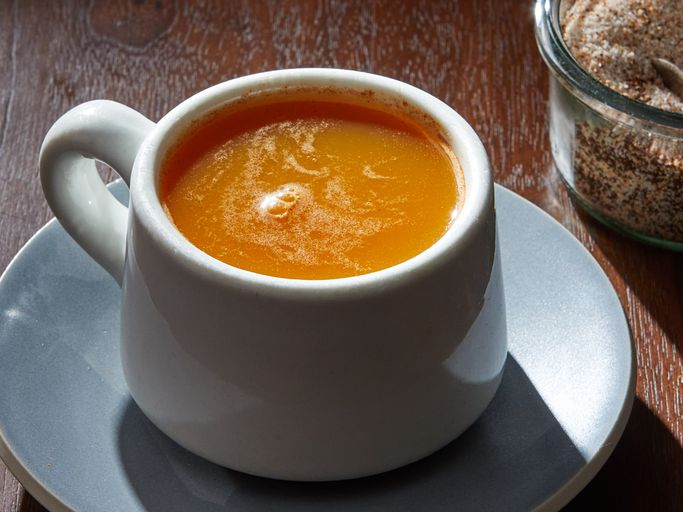

Home
Instant Russian Tea Recipe

Description: This instant Russian tea mix can be given as a gift in a jar. It tastes like mulled cider.
Ingredients
- 2 cups orange-flavor drink powder
- 3 ounces lemonade-flavor drink powder
- ¾ cup white sugar
- ½ cup instant tea powder
- ½ teaspoon ground cinnamon
- ½ teaspoon ground allspice
- ¼ teaspoon ground cloves
Steps
- Gather all ingredients.
- Combine both drink powders in a large bowl.
- Mix in sugar, tea powder, cinnamon, allspice, and cloves until well combined.
- Divide mixture among three pint-sized jars.
- Write the following instructions on three gift tags: "Place 2 to 3 rounded teaspoonfuls into a cup, add boiling water, and serve."
- Seal the jars and attach the gift tags.